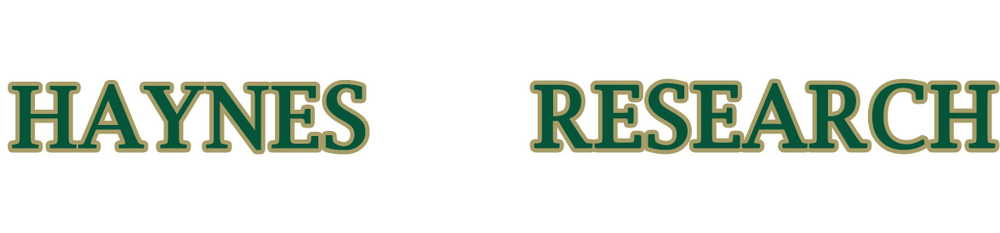

Home
Dr. Haynes
Interested in Research?
Publications
Links
Members
Former Members
Chemistry Resources
Reaxys
EROS
Web of Science
Named Reactions (Wikipedia)
List of Scientific Journals
Journal Abbreviations
Organic Chemistry Resources
Organic Chemistry Conferences
Nobel Prize Database
ACS Quick Style Guide
U of M Chemical Inventory
U of M NMR Homepage
Practive Problems
Evans Advanced Organic Problems
Fukuyama Group Meeting Problems
Total Syntheses
Trauner Synthetic Problems
Experimental Reference
Not Voodoo
Aldrich's Nomograph
Solvent Boiling Points
Molarity of Concentrated Solvents
Evan's pKa Tables
TLC Stains
NMR Impurities I
NMR Impurities II
Crystallization Tips